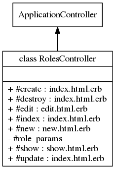

Class: RolesController
- Inherits:
-
ApplicationController
- Object
- ActionController::Base
- ApplicationController
- RolesController
- Defined in:
- app/controllers/roles_controller.rb
Overview
Handles Role model used by devise and cancancan gems.
Only accessible to users with admin role. The routes of this
controller support localization but the web pages are not translated as it
is used only by admin. 
Instance Method Summary collapse
-
#create ⇒ index.html.erb, new.html.erb
Save the new role in the database.
-
#destroy ⇒ index.html.erb
Delete the role from the database.
-
#edit ⇒ edit.html.erb
Displays the role to be modified.
-
#index ⇒ index.html.erb
Displays roles list with bootstrap table sortable format.
-
#new ⇒ new.html.erb
Asks for new role.
-
#role_params ⇒ Object
private
Use callbacks to share common setup or constraints between actions.
-
#show ⇒ show.html.erb
Displays the role and the users associated with it.
-
#update ⇒ index.html.erb, edit.html.erb
Update the role in the database.
Methods inherited from ApplicationController
#configure_permitted_parameters, #default_url_options, #extract_locale_from_accept_language_header, #set_locale
Instance Method Details
#create ⇒ index.html.erb, new.html.erb
Save the new role in the database
44 45 46 47 48 49 50 |
# File 'app/controllers/roles_controller.rb', line 44 def create if @role.save redirect_to @role, notice: 'Role was successfully created.' else render :new end end |
#destroy ⇒ index.html.erb
Delete the role from the database
65 66 67 68 |
# File 'app/controllers/roles_controller.rb', line 65 def destroy @role.destroy redirect_to roles_url, notice: 'Role was successfully destroyed.' end |
#edit ⇒ edit.html.erb
Displays the role to be modified
38 39 |
# File 'app/controllers/roles_controller.rb', line 38 def edit end |
#index ⇒ index.html.erb
Displays roles list with bootstrap table sortable format
20 21 22 |
# File 'app/controllers/roles_controller.rb', line 20 def index @roles = Role.all end |
#new ⇒ new.html.erb
Asks for new role
14 15 |
# File 'app/controllers/roles_controller.rb', line 14 def new end |
#role_params ⇒ Object (private)
Use callbacks to share common setup or constraints between actions.
Never trust parameters from the scary internet, only allow the white list
through.
73 74 75 |
# File 'app/controllers/roles_controller.rb', line 73 def role_params params.require(:role).permit(:name, :description) end |
#show ⇒ show.html.erb
Displays the role and the users associated with it.
27 28 29 30 31 32 33 |
# File 'app/controllers/roles_controller.rb', line 27 def show if @role.users.length == 0 @associated_users = "None" else @associated_users = @role.users.map(&:name).join(", ") end end |